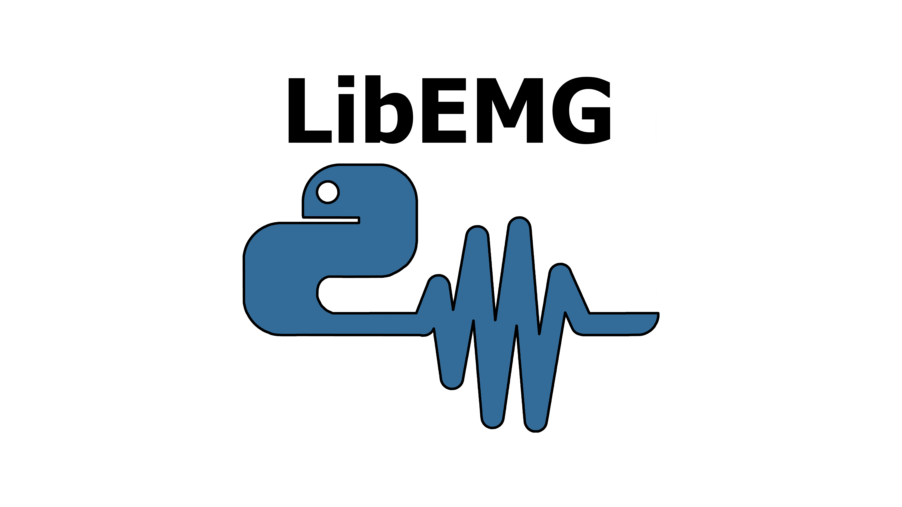

LibEMG

The goal of this library is to provide an easy to use and feature-rich API for developing robust real-time EMG-based interactions, and performing thorough offline analysis.
Authors: Ethan Eddy, Evan Campbell, Angkoon Phinyomark, Scott Bateman, and Erik Scheme
Installing the Latest Release
$ pip install libemg
Interactive API Walkthrough
Interactive offline and online walkthroughs were created as part of a LibEMG workshop we presented at MEC24, hosted by the Institute of Biomedical Engineering. These walkthroughs step through much of the core functionality of LibEMG, and offer visuals to explain pieces of the API. The offline example is formatted as a jupyter notebook, allowing you to see visuals for each code snippet without running the code yourself. Please check out out the workshop GitHub repository to see these interactive API walkthroughs: https://github.com/LibEMG/LibEMG_MEC24_Workshop.
Questions
Check out our discord server if you have questions, comments, or feature requests: https://discord.gg/NeqTTXmM4F
Citing
We ask that if you leverage this library for any research-related purposes please cite the following publication:
@ARTICLE{10214558,
author={Eddy, Ethan and Campbell, Evan and Phinyomark, Angkoon and Bateman, Scott and Scheme, Erik},
journal={IEEE Access},
title={LibEMG: An Open Source Library to Facilitate the Exploration of Myoelectric Control},
year={2023},
volume={11},
number={},
pages={87380-87397},
doi={10.1109/ACCESS.2023.3304544}}
This API documentation is split into the following six sections:
Introduction:
API:
Offline Examples: